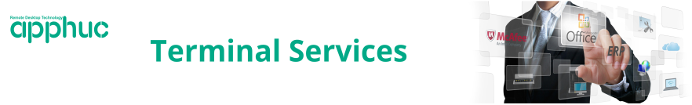
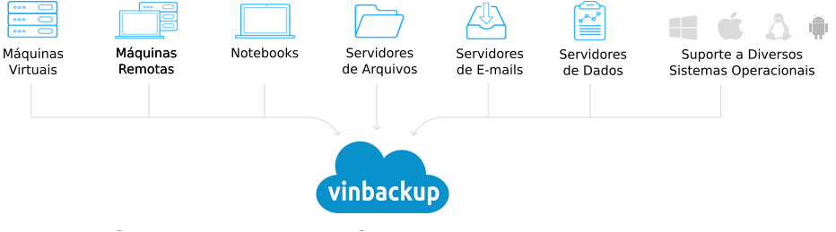
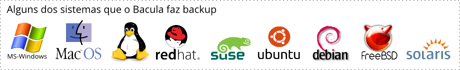
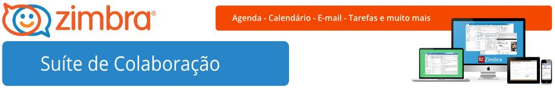
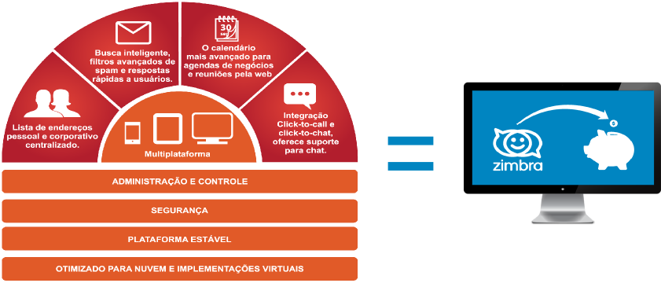

Soluções que implementamos
Implementamos um conjunto de soluções baseadas tanto em software de domínio privado quanto livre, de eficácia comprovada que
possibilitam a maximização dos recursos empresariais através da redução de problemas típicos nas organizações.
apphuc - Terminal Services
Disponibilize suas aplicações MS-Windows em qualquer lugar e em qualquer dispositivo.
Clique aqui e saiba mais.
O apphuc é a uma simples solução de computação baseada em servidor com a administração de usuário fácil e eficiente.
Os problemas de aplicação podem ser resolvido em um local central, não nos locais de usuários finais.
Isso possibilita a redução de gastos tanto com hardware (computadores, ativos de rede etc.) e software (licenças proprietárias e manutenção de sistemas), quanto com o pessoal envolvido no suporte aos usuários finais.
O apphuc elimina a necessidade de infra-estrutura de softwares complicados e complexos. E ao contrário de outras soluções que ditam uma nova infra-estrutura de gerenciamento de aplicativos, o apphuc foi projetada para funcionar perfeitamente em seu ambiente atual.
Então, se você deseja publicar apenas uma única aplicação ou mais; ou o trabalho completo, o apphuc é o que você precisa.
Com o apphuc você pode perfeitamente executar seus aplicativos MS-Windows (ERP, sistemas de gestão e etc.) tanto localmente, quanto remotamente com o máximo de desempenho e investindo pouco.
Suas aplicações MS-Windows poderão ser executadas em qualquer dispositivo (notebook, desktop ou móvel), mesmo através da Internet.
Clique fora para fechar
×vinbackup - Backup nas nuvens
O Mais Completo Sistema de Backup do Mercado
Clique aqui e saiba mais.Habilite o backup da sua empresa em múltiplos locais - de backup local ao backup em nuvem. Replique os dados entre os locais para garantir a melhor disponibilidade e proteção dos dados
Acelere a gestão de proteção de dados com um portal fácil de utilizar que consolida todas as operações em uma simples e unificada interface, disponível de qualquer local, à qualquer momento.
Contrate o serviço de backup nas nuvens na modalidade terceirizada e diminua gastos com pessoal necessários para administração das rotinas de backup.
Proteja toda a estrutura de TI com o suporte à servidores físicos, máquinas virtuais, instâncias cloud, PCs, Mac® computers, iPhone®/iPad®, dispositivos Android®, e aplicações como Microsoft Exchange®, SQL Server®, SharePoint®, e caixas postais do Office 365®.
Afaste da sua empresa as chances de perder dados devido infecções com ransomware.
Faça backup ou migre os dados de qualquer plataforma para a nuvem.

Clique fora para fechar
×Vinfirewall - Firewall e muito mais
Proteja os dados da sua empresa de forma prática e segura.
Clique aqui e saiba mais.
Proteja o seu negócio de ataques internos ou externos
Proteja os seus usuários com antivírus de navegação e controle o que eles estão fazendo na Internet.
Otimize o uso dos links de Internet da sua empresa
Reduza custos, melhore a performance e aumente a disponibilidade do seus links de Internet através de filtros de navegação e balanceamento de carga.
Implemente segurança aos seus dados
Trabalhe de qualquer lugar através do acesso seguro aos dados da sua empresa.
Preteja-se se ataques
Evite ataques internos e externos aos seus arquivos e bancos de dados.
Principais recursos
Firewall de última geração, Antivírus de Navageção, Filtro Web, AntiSpam, Balanceamento e Redundância de Links, QoS, VPN, Relatórios Gerenciais e muito mais.
Clique fora para fechar
×Proxy com Antivírus - Controle de acesso à Internet
Controle o uso da Internet na sua empresa de forma fácil, segura e livre de licenças.
Clique aqui e saiba mais.
Você tem o controle do que os seus funcionários fazem na Internet durante o horário de trabalho?
Se a resposta for "Não", saiba que os dados existentes nos computadores da sua empresa podem ser perdidos por conta de vírus ou invasões por hackers. Como também, os seus funcionarios, ao invés de estarem trabalhando, podem estar jogando tempo fora acessando redes sociais (Exemplo: Facebook, Twiter e etc.), sites de pornografia, pedofilia, pirataria e etc.
A maior fonte de infecção de vírus de computador nas empresas é a estação de trabalho do usuário. A navegação em sites que possuem vírus as vezes é realizada sem o conhecimento do funcionário que está utilizando o computador ou as vezes é realizada de maneira proposital.
Uma vez infectado um computador da rede corportativa, todos os demais e também em todas as unidades de negócios podem ser rapidamente infectados.
O paleativo mais utilizado é a instalação de um anti vírus nas estações. Porém, todos sabemos que muitos desses softwares não são atualizados sistematicamente ou são desativados pelos usuários através do argumento que estes sistemas deixam o coputador mais lento.
Então, o que fazer para proteger os computadores da minha empresa contra vírus existentes em sites na Internet e monitorar com facilidade o que os meus funcionários fazem na Internet?
Nós da VINCIANO implantamos em sua empresa um serviço de proxy com integração a um anti-vírus. Isto é a solução.
E como esse proxy funciona na prática?
Ao executar o navegador (Exemplo: Firefox, Chrome e Internet Explorer), será solicitado o login (nome) e a senha, previamente cadastrados, do usuário.
Ao tentar abrir um site da Internet, esse acesso será filtrado pelo antivírus, em seguida será verificado se o site é de interesse da empresa ou não. Se o site estiver liberado para ser acessado por aquele usuário, o acesso será concedido. Se não, o acesso ao site será negado, mesmo que o site não possua vírus.
Veja a figura a seguir.
Esse tipo de controle faz o usuário perder tempo?
Não. Tudo isso acontece em milésimos de segundos e com o devido registro dos acessos. Detalhados por dia, hora, usuário e site, para consulta posterior!
Isso custa caro?
Não. Nós da VINCIANO utilizamos uma combinação de sistemas de domínio público para que a sua empresa não gaste dinheiro com o que é mais caro. Ou seja, as licenças pagas.
Clique fora para fechar
×GLPI - Help Desk e Gestão do Parque de Informática
Gerencie os recursos e serviços de informática da sua organização.
Clique aqui e saiba mais.
Como está o nível de serviço prestado pela área de informática em sua empresa?
Baixo? Merece melhorar?!
Então, saiba que o sucesso na prestação de serviços na área de informática é medido através da velocidade em solucionar os problemas dos seus usuários.
Se a sua empresa não controla as solicitações de serviços de informática, a tendência é que tais chamados não sejam atendidos no momento adequado e até perdidos por falta de um controle correto.
Então, como a sua empresa controla hoje as solicitações de serviços de informática?
Através de planilha do Excel?
Através de e-mail?
Através de um sistema inadequado ou que não ofereça confiança nos dados gravados?
Se a resposta é sim, saiba que você está perdendo tempo e dinheiro por não registrar e tratar as solicitações de serviços de informática dos seus usuários. E isso poderá prejudicar, além da área solicitante, outros departamentos em sua empresa como: contabilidade, financeiro, logística, produção e outros mais.
Como evitar que este problema de perda de solicitações de serviço de informática aconteça?
A resposta está na implantação de um sistema específico para solicitação e acompanhamento de chamados de serviços de informática que funcione como um canal de comunicação entre os usuários da sua empresa e a área de informática.
Este tipo de sistema facilita o dia a dia do pessoal da área de informática ajudando-os a planejarem o atendimento das solicitações dos usuários. Ou seja, um sistema para Help Desk.
E através desse sistema, os usuários da sua empresa também poderão acompanhar o andamento de cada solicitação de serviço à área de informática.
Que sistema a VINCIANO implanta, como ele funciona e quais as suas principais funções?
Implantamos o melhor sistema para área de help desk. O seu nome é GLPI (Gestão Livre do Parque de Informática) e é uma solução de domínio livre.
Ao ser implantado, os usuários da sua empresa, seja na matriz ou nas filiais, ou até externos, acessarão o sistema através do navegador Internet (Exemplo: Firefox, Chrome, Internet Explorer), para incluir uma nova solicitação de serviço de informática.
Após isso, o próprio sistema enviará instantaneamente uma mensagem para o suporte técnico, como também o seu responsável, avisando que uma nova solicitação de serviço foi inserida.
Na sequência, o responsável pela área de suporte de informática, programará a prestação de serviço de acordo com a necessidade de tempo do usuário em função da sua urgência.
Assim que o serviço for finalizado, o usuário solicitante poderá acessar a sua solicitação e alterar a situação da mesma para "fechada". Ou seja, indicando que o serviço foi finalizado.
Se você quiser, também poderá ser ativado no sistema uma pesquisa de satisfação para o usuário solicitante qualificar como o serviço foi prestado pelo técnico de informática.
Como principais funções do sistema GLPI, podemos dar destaque a:
* Facilidade de uso;
* Informações consistentes e protegidas;
* Histórico de uso e alterações no sistema (Log/auditoria);
* Controle eficiente de solicitações de serviços;
* Integração com o serviço de diretório existente (Exemplo: Active Directory);
* Envio automático de e-mail para avisar a inclusão, alteração e fechamento de solicitações;
* Encaminhamento automático de solicitação de serviço para um técnico de informática ou um grupo de técnicos;
* Compartilhamento de documentos em qualquer formato para facilitar o trabalho dos usuários. Exemplo: POP (Procedimentos Operacionais Padrão), Normas, Orientações, Manuais, Especificações e etc.);
* Gráficos e relatórios personalizados.
* Base de conhecimento para consulta posterior de problemas e soluções.
Esse sistema também possibilita que controlemos o parque de informática da empresa (através da integração com o sistema de inventário OCS Inventory NG), gerenciemos contratos com fornecedores, cadastremos as redes e os equipamentos ativos nas mesmas, administremos os suprimentos para a área de informática e muito mais.
Que tipo de respostas esse sistema possibilitará?
Além de gráficos prontos que mostram rapidamente diversas informações como: quantidade de solicitações abertas, atrasadas e solucionadas, o sistema GLPI também fornece, entre outras, as seguintes informações:
* Usuários e departamentos que mais solicitam serviço;
* Quantidade de chamados por período;
* Tipos de problemas que mais ocorrem;
* Percentual de solicitações atendidas e resolvidas dentro do prazo acordado (SLA), e etc.
As informações citadas acima e outras mais são exibidas pelo sistema tanto para que você saiba como andam os serviços prestados pela área de informática na sua empresa, quanto para poder realizar mudanças que reflitam melhora nos setores solicitantes e na área de tencologia da informação ajudando a sua empresa reduzir tempo e dinheiro com suporte.
Que tipo de equipamento ou software é necessário para a implantação desse sistema?
Apenas uma CPU comum, conforme o exemplo de configuração mínima abaixo:
- Um Processador Intel Celeron ou similar;
- Quatro Gigabytes de memória RAM;
- Um disco rígido de 200 Gigabytes;
- Placa de rede cabeada.
A implantação de um sistema desse tipo leva muito tempo e o seu custo é alto?
Não!
Quanto ao tempo de implantação... fique tranquilo. Pois, na mesma semana que o sistema for implantado, você já começará a ver os resultados positivos.
Por ser uma solução de domínio livre, isso irá livrá-lo de comprar licenças e de pagar por manutenção de uso mensal de sistema. Assim, o investimento de implantação será apenas das horas de instalação deste software e de treinamento da sua equipe de informática para fazer com que ela possa administrar o sistema sem a necessidade de terceiros.
Nós da VINCIANO, temos mais de dez anos de experiência com software para Help Desk, como também na organização da área de informática. Tudo isso para lhe oferecer uma retorno eficiente do seu investimento, mesmo que este seja pequeno.
Clique fora para fechar
xBacula - Backup seguro e confiável
Proteja seus dados com uma solução segura e multiplataforma para cópia de segurança.
Clique aqui e saiba mais.
Se os servidores da sua empresa sofressem um sinistro você teria uma cópia atualizada dos seus arquivos?
Somente esta pergunta, para algumas pessoas, já gera mal estar.
Geralmente, os responsáveis pela área de informática das empresas acham que ter um sistema de backup confiável dos arquivos contidos nos servidores é uma solução de alto custo.
Ainda bem que isso não é verdade!
Nós da VINCIANO implantamos uma solução segura e poderosa que garante a cópia de segurança em todas as plataformas de sistemas disponíveis.
O seu nome é Bacula. E é uma ferramenta de domínio livre usada no mundo inteiro, relativamente fácil e muito eficiente. Ela também oferece muitos recursos avançados de gerenciamento e armazenamento que beneficiam a tarefa de encontrar e recuperar arquivos perdidos ou danificados. Tudo isso sem custos de licenciamento ou de pagamento de manutenção por mês.
O Bacula realiza a cópia de segurança nos mais diversos tipos de sistemas operacionais (Windows, Linux, Unix, Mac OS e etc.) , sejam para servidores ou estações de trabalho, e ainda informa automaticamente como ocorreu cada rotina de backup ou de recuperação de arquivos de qualquer tipo como: DANFE (Notas fiscais eletrônicas), PDF, XML, desenhos, planilhas, bases de dados, contratos, fotos, vídeos e etc.).

Clique fora para fechar
×Zimbra - Suíte de colaboração
Integre os seus colaboradores e parceiros através de uma plataforma eficaz de comunicação.
Clique aqui e saiba mais.
O Zimbra é a suíte de colaboração web mais avançada do mundo. Por isso, mais de 500 milhões de pessoas usam-no em mais de 135 países.
Ele vai além dos sistemas já conhecidos e permite que você experimente a liberdade da integração do e-mail, calendário de eventos, catélogo de endereços e lista de tarefas.
Por ser construído com o que há de mais avançado em tencologia para a Internet, o Zimbra permite que com poucos cliques você possa gerenciar a sua lista de tarefas e a dos seus funcionários.
Ele também lhe dá condições de acessar o seu ambiente de trabalho, através de um navegador Internet (Exemplo: Firefox, Chrome ou Internet Explorer) não somente em computadores de mesa ou notebooks. Mas também em dispositivos móveis como celulares e tablets.
Assim, você fica livre da necessidade de instalar programas clientes nas estações de trabalho!
Principais características do Zimbra

Nós da VINCIANO implantamos o Zimbra em sua empresa e ensinamos a sua equipe de informática como administrá-lo para tirar o maior proveito deste sistema.
Clique fora para fechar
×